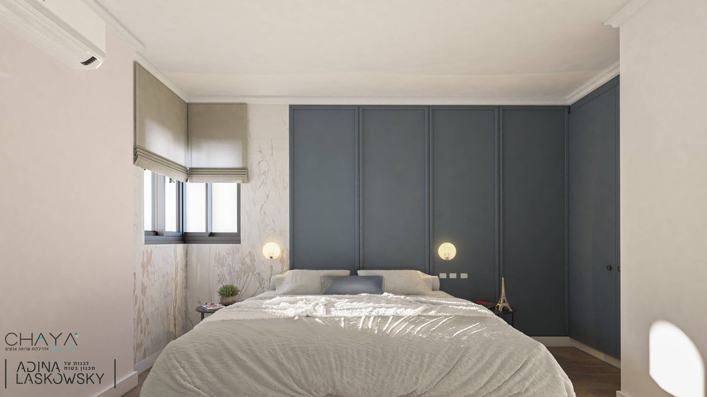
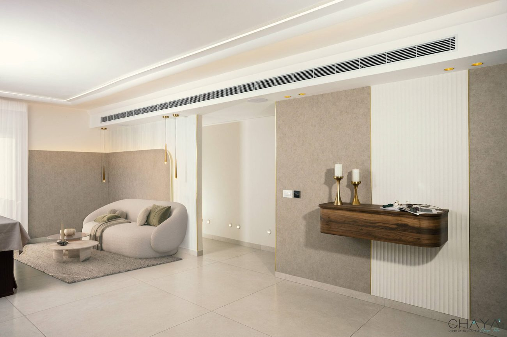
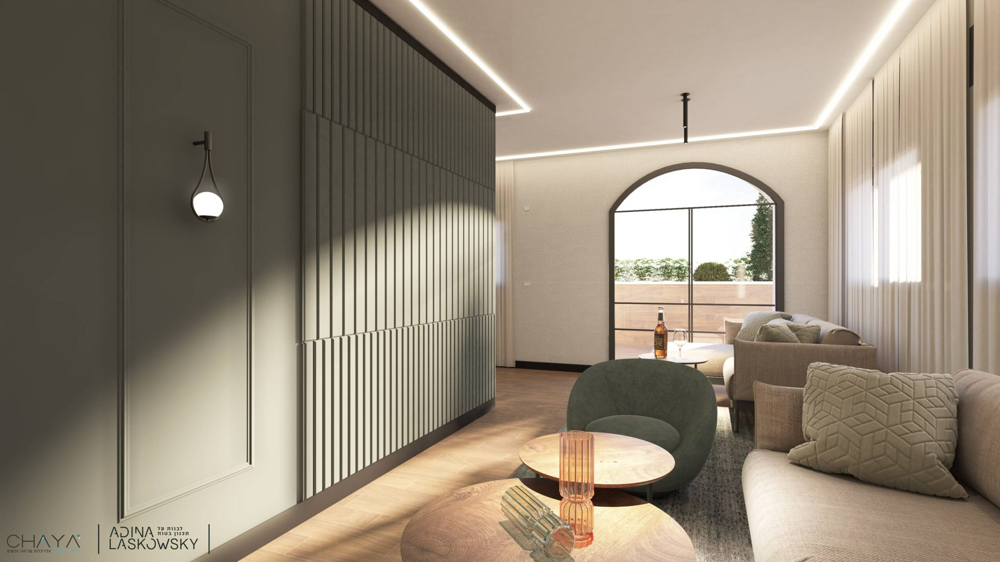
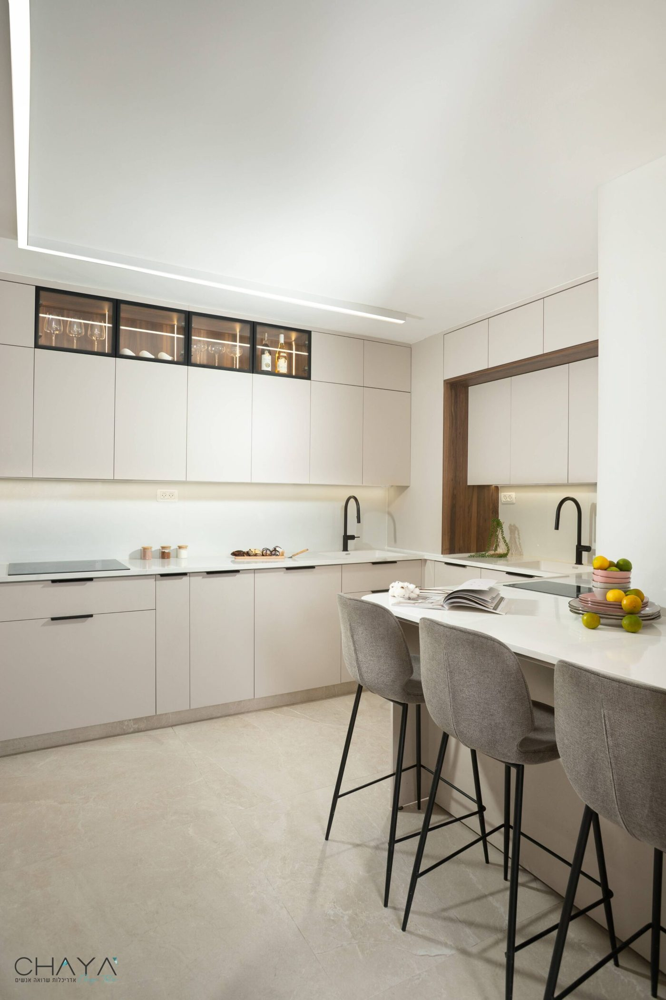
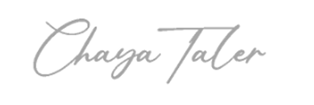

WELCOME HOME
Architecture and Design by Chaya Taler
להתפנק כל יום מחדש
בבית עוצר נשימה
הגעתם הביתה מעוד יום עבודה?
מגיע לכם להרגיש מה קורה כשטעם ועיצוב מהפנט נפגשים
בתכנון ארכיטקטוני מדויק ופיקוח בשטח.

איך זה קורה?
הרבה לפני העיצוב. אתם יושבים איתנו להבנת הצרכים, החלומות, וההרגלים המיוחדים רק לכם. משם ממשיכים לתכנון מדויק ברמת פיקוח בניה, עוד לפני הבניה, כולל: חלוקת השטח בצורה חכמה ואיכותית עם חשיבה קדימה, ראש גדול לטווח הרחוק. מערכות מיזוג, חשמל, שקעים, חימום תת רצפתי, הכל נלקח בחשבון! סטנדרט שהקבלנים בשטח משתמשים בהן כמודל לחיקוי.
THE
PERF
ECT
BALA
NCE
רק אחר כך מגיע שלב העיצוב והאסתטיקה בו אתם מקבלים:
שפה עיצובית עשירה ועכשווית שיוצרת בית מלא אופי, אור ואווירה.
לפני שיפוץ או בניה ומבינים בעיצוב?
יפה. אבל מסתבר שאתם רוצים גם בית עם חומרים טובים, תכנון פרקטי ונוחות מקסימלית רוב המשפצים חושבים שצריך לבחור ביופי או בפרקטיקה. 98% ממשרדי האדריכלות ועיצוב הפנים מתמחים בעיצוב או בתכנון? אנחנו מאמינים שהשילוב השלם ביניהם הוא המנצח.


"מלבד העברה של תשלומים לא עשיתי כלום!
באת לפקח, לראות, להעיר, להאיר, לשפר, לתקן, לקבל, לעשות - ואני הרגשתי מפונקת לגמרי…"
בת שבע בורנשטיין
"חוויה עיצובית מכוכב אחר!
חיה נכנסה באופן מוחלט לנעליים שלנו,הובילה אותנו בחן, בנתה בכשרון והביאה לתוצאה לא פחות ממדהימה!!!"
משפחת שורין
סיימנו את התוכניות המפורטות והעיצוב המושלם על השרטוט? זה רק ההתחלה:) עוד לא נפרדנו!
נוכחות מלאה בשטח: מעורבות אישית בכל שלבי הביצוע, שליטה מוחלטת באיכות החומרים והגימור שמונעת טעויות ביצוע יקרות עוגמות נפש ועשרות אלפי שקלים.
ולווי מלא מהסקיצה הראשונית, דרך בחירת חומרי הבנייה, הקניות והליווי בשטח ועד לבית המושלם והשלם.
גם אם אתם אוהבים יופי, מגיע לכם לא להתפשר על התכנון הטוב ביותר שהוא הבסיס לבית שעובד כל יום בשבילכם.
SELECTED
PROJECTS
פרויקטים נבחרים


KIND
WORDS
מה אומרים עלינו

מלבד העברה של תשלומים לא עשיתי כלום!
באת לפקח, לראות, להעיר, להאיר, לשפר, לתקן, לקבל, לעשות - ואני הרגשתי מפונקת לגמרי…
כולם הרחיבו ושיפצו, וטענו ללא יוצא מן הכלל ששלנו יצא כמה רמות מעל כולם
לסיכום ציפינו ל100% וקיבלנו 1000%
חוויה עיצובית מכוכב אחר!
חיה נכנסה באופן מוחלט לנעליים שלנו,
הובילה אותנו בחן, בנתה בכשרון והביאה לתוצאה לא פחות ממדהימה!!!
היה לך באמת אכפת מההצלחה המושלמת של הפרויקט שלי, עם סבלנות בלי סוף והרגשה טובה.
אני מרגישה שזה נס שפניתי אלייך
היה לך באמת אכפת מההצלחה המושלמת של הפרויקט שלי... עם חיוך גדול, סבלנות בלי סוף, נתינת הרגשה טובה בנעימות ועדינות
עשתה הרבה מעבר לנדרש, הייתה זמינה, ונתנה טיפים נוספים לייעול הפרויקט
HOW IT
WORKS
-
שלב 1: הקשבה ואפיון
צוללים לאורח החיים, לצרכים ולחלומות שלכם, ובונים קונספט תכנוני ועיצובי בלעדי ומותאם אישית.
-
שלב 2: תכנון עומק
מפצחים את התכנון, ומגיעים לתוכנית פרקטית המותאמת במדויק לאורח החיים שלכם.
-
שלב 3: תוכניות ביצוע והדמיות מוחשיות
מייצרים תוכניות עבודה קפדניות ומדויקות, הכוללות מערכות חשמל, מיזוג, אינסטלציה ועוד, לצד הדמיות ריאליסטיות שמראות לכם בדיוק איך הבית יראה בלי לקחת ריזיקות.
-
שלב 4: בחירת חומרים וסטיילינג
מבקרים את השטח ובוחרים ביחד קרמיקות, חיפויים, טקסטורות, התאורה והגימורים הקטנים שעושים את כל ההבדל.
-
שלב 5: נוכחות בשטח ופיקוח
בהתאמה מלאה לתוכניותבודקים כל שקע וכל מזגן באחריות, כדי למנוע את הבעיות עוד לפני שהן נוצרו.
TALER
IN NUMBERS
שנות ניסיון והובלת פרויקטים
דיוק בתוכניות ובחומרי הבנייה
פשרות על איכות, יושר ושקט נפשי
פרויקטים עם אמירה


מוכנים להפוך את הבית
שלכם ליצירה עוצרת נשימה?
מגיע לכם להנות מתוצאה מושלמת ומגימור ללא פשרות.
מלאו שאלון התאמה לקראת הבית עם הגימור הטוב ביותר שראיתם אי פעם!
THE TALER STANDARD
כשאדריכלות מתקדמת, ניסיון של עשור וחוש אסתטי נדיר נפגשים בשטח מתקבלת תוצאה בסטנדרט העליון: עיצוב עוצר נשימה, תכנון חכם ורמת ביצוע מושלמת.

CLIENTS
EXPERIENCE
-
חיה לקחה אחריות, המליצה ובררה עבורנו בכל נקודה מאתגרת שעלתה בתהליך, והובילה להצלחה ושביעות רצוננו.
-
מצאת פתרונות יצירתיים ומחוץ לקופסה ותכננת בגאונות כל פרט בדירה שהוכפלה כמעט פי שתיים.
-
ראינו בית עם שטח לא גדול מידי, ויחד עם זאת הצלחת לעצב אותו בצורה מרווחת ונעימה, עם ניצול מקסימלי של הדירה.
-
מה שיצא הוא ניצול מקסימלי של השטח תוך שימת לב לפרטים הקטנים ביותר שאפילו לא חשבנו עליהם.
-
שנים עבדתי בתחום. עיצבתי, תכננתי, בחרתי חומרים, פיקחתי… המשרד שלי הוא סיפור של הצלחה שלך, גם בביצוע מושלם שדאגת לו עד הפרט הכי קטן.
-
כולם מתפעלים מאיך שניצלת כל פינה בצורה מקסימלית… ממש רואים שהקדשת מחשבה לכל פרט.
חיה לקחה אחריות, המליצה ובררה עבורנו בכל נקודה מאתגרת שעלתה בתהליך, והובילה להצלחה ושביעות רצוננו.
משפחת שורין
THE
JOURNAL
ידע ששווה זהב